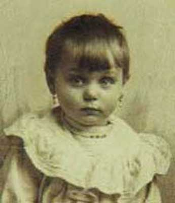
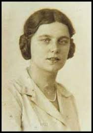
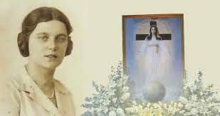
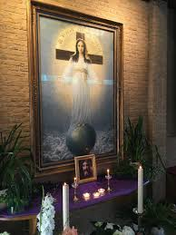
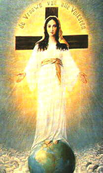

“NASCEU PARA SERVIR”
A FAMÍLIA

A senhora ISLE (Ida) JOHANNA PEERDEMAN, nasceu no dia 13 de Agosto de 1905, em Alkmaar, na Holanda, e foi Batizada no dia seguinte, na Igreja de São José. Seu pai trabalhava como representante têxtil. Sua mãe era uma senhora dedicada ao trabalho, mas muito doente. Ida era a caçula de cinco filhos. A mãe acabou falecendo quando ela tinha 8 anos de idade, e por isso, foi criada pelos seus irmãos.
Aos 12 anos de idade, ela teve a sua primeira experiência de encontro com NOSSA SENHORA, exatamente no momento em que voltava para casa, depois de ter feito uma Confissão na Igreja. Ainda próximo ao Templo Cristão ela viu a figura luminosa de uma mulher linda que lhe sorriu. A menina reconheceu Aquela Senhora como sendo a SANTÍSSIMA VIRGEM MARIA. Era o dia 13 de Outubro de 1917, o mesmo dia da última Aparição de NOSSA SENHORA aos três pequeninos pastores em Fátima, Portugal. Entretanto, Ida não conhecia a notícia das Aparições de NOSSA SENHORA em Fátima, Portugal. A verdade é que durante o mesmo mês de Outubro, a VIRGEM MARIA apareceu mais duas vezes para ela. Entretanto, nas Aparições acontecidas, a VIRGEM não lhe disse nenhuma palavra, apenas sorriu para ela.
Aconselhada pelo seu Pai e pelo Padre, que sempre a confessava na Igreja, decidiu não falar com ninguém a respeito daqueles eventos extraordinários.
ESTUDOS E IDEAL

Por outro lado, anos mais tarde, com a evolução dos acontecimentos sobrenaturais, o senhor Bispo Diocesano solicitou um exame psicológico de Ida Peerddeman, para compor o processo canônico referente ao acontecimento sobrenatural. E o resultado foi evidente: “Ida era perfeitamente normal e suas palavras absolutamente sinceras”.
AJUDANDO NA ECONOMIA DOMÉSTICA
Com a idade de 18 a 19 anos, foi trabalhar numa fabrica de perfumes, em Amsterdã. Naquela época Ida demonstrava grande facilidade para criar amizades e bom relacionamento no trabalho, e por isso também, surgiram diversos admiradores da sua inteligência viva e criativa, assim como por suas maneiras gentis e simples. Todavia, ela não se sentia nem preparada e nem desejosa de ser conduzida ao casamento.
AS APARIÇÕES DE NOSSA SENHORA
As Aparições da SANTÍSSIMA
VIRGEM MARIA, assim como as mensagens da Santa Mãe, começaram mesmo no dia 25 de
Março de 1945, e Ida estava com 39 anos 
Nesse dia 25 de Março de 1945 aconteceu a primeira Aparição da VIRGEM em que a SANTA MÃE entrou em contato direto com a vidente. Ida estava em sua casa conversando com suas três irmãs sobre a guerra, ao redor de um forno cerâmico por causa do intenso frio que fazia, quando chegou para visitá-la o sacerdote dominicano amigo da família, Padre Joseph Frehe, que também era o Confessor de Ida, além de ser o seu bom amigo. E justamente, ali naquele exato momento, NOSSA SENHORA apareceu. IDA PEERDEMAN depois relatou ter visto uma luz forte no canto da sala. Dessa luz clara e intensa surgiu a MÃE DE DEUS, que lhe disse: “Depois repita para o Padre e suas irmãs o que EU vou lhe dizer”. Então NOSSA SENHORA falou lentamente, mostrando-lhe o Rosário, aconselhando sobre as vantagens e benefícios das orações, e recomendou que todos rezassem, e, sobretudo, que perseverassem diariamente nas orações. Ida então lhe perguntou: “A SENHORA é a VIRGEM MARIA?” ELA respondeu:“Sim. Mas vão ME chamar de A SENHORA”. A seguir, a “MÃE DE DEUS pediu que fossem oficialmente reconhecidas as SUAS atuações como MEDIANEIRA e ADVOGADA da humanidade junto a DEUS, prometendo que A SENHORA DE TODOS OS POVOS daria a paz, a paz verdadeira a todas as Nações”. Depois de algumas orientações e conselhos, a VIRGEM MARIA fez a primeira profecia, que verdadeiramente logo um mês após, se concretizou. ELA disse: “No dia cinco (5) de Maio de 1945, será o fim da guerra na Holanda, o país ficará livre dos nazistas”.
A seguir NOSSA SENHORA permitiu à vidente ver soldados uniformizados voltando para as suas casas, e também ELA lhe antecipou dizendo, que Ida teria uma missão muito importante e que lhe estava reservado uma pesada cruz a qual mal conseguiria erguer, deixando claro que durante sua vida ela teria muito sacrifícios e serviços. A VIRGEM MARIA também recordou que esta visita DELA, estava bem próxima do dia da comemoração dos 600 anos do Milagre Eucarístico ocorrido no dia (13/03/1345) em Amsterdam. Depois que NOSSA SENHORA se despediu, o Padre Joseph, diante dos fatos revelados, encarregou às irmãs de Ida, escrever todos os fatos e acontecimentos que ocorressem com Ida.
SENHORA DE TODAS AS NAÇÕES

A ORAÇÃO DA SANTA MÃE
A segunda fase das Aparições aconteceu do dia 16 de Novembro de 1950 até o dia 4 de Abril de 1954, num total de 26 Aparições. No dia 16 de Novembro de 1950, NOSSA SENHORA revelou o nome do título que ELA deseja receber, neste conjunto de Aparições em Amsterdam na Holanda:“A SENHORA DE TODAS AS NAÇÕES (OU DE TODOS OS POVOS)”.E para isso, queria que essa verdade fosse divulgada para o mundo, a fim de deixar evidente que ELA exigia plena aceitação e o devido respeito a SUA Vontade. Com este objetivo no inicio de 1951, mais precisamente no dia 11 de Fevereiro de 1951, ELA transmitiu a Ida a oração que todos deveriam rezar: “SENHOR JESUS CRISTO, FILHO DO PAI ETERNO, envia agora o SEU ESPÍRITO sobre a Terra. Deixa o ESPÍRITO SANTO habitar nos corações de todas as Nações, para que sejam preservadas da degeneração, do desastre e da guerra. Que a SENHORA DE TODAS AS NAÇÕES, seja a nossa defensora. Amém”.
A vidente senhora Ida se empenhou com todas as suas forças para cumprir a Vontade da VIRGEM MARIA. A idéia de o DIVINO ESPÍRITO SANTO vir renovar as Nações do Mundo, trazendo paz e vida era tão importante, que Ida nas suas mensagens fazia evidente empenho, igualando o necessário realce ao fato, como também destacava a presença fundamental de NOSSA SENHORA em nossa vida. E explicava, clareando a mente humana, que deveríamos implantar uma nova imagem de “MARIA”, porque verdadeiramente ELA é e sempre foi a NOSSA MÃE SANTÍSSIMA dócil e disponível a todos os seus filhos que buscam o SEU precioso auxílio. Mas a SANTÍSSIMA VIRGEM MARIA possui também uma dignidade muito mais especial e de infinito respeito, por ser a “MÃE DE DEUS” . Então meus prezados, a “MÃE DO DEUS DA VIDA” de todos nós, sendo exatamente a nossa amorosa MARIA, com muito mais prazer nosso, deve ser tratada com o necessário e devido respeito de “SENHORA”, com um carinho muito mais especial, muito mais atencioso e dedicado, por todos nós. Nós e toda a humanidade constituímos, os seus queridos e amados filhos que sempre necessitamos do SEU precioso e poderoso Amor de MÃE.
O QUINTO DOGMA
E para completar o desejo Divino a respeito das Aparições da SENHORA DE TODAS AS NAÇÕES (DE TODOS OS POVOS), faz parte a Igreja Católica consolidar a realidade do 5º Dogma Mariano, seguindo os quatro existentes: O primeiro: MARIA MÃE DE DEUS (Theotokos); o segundo: MARIA SEMPRE VIRGEM; o terceiro: A IMACULADA CONCEIÇÃO; o quarto: ASSUNÇÃO AOS CÉUS EM CORPO E ALMA; o quinto dogma seria: “MARIA CO-REDENTORA, MEDIADORA e ADVOGADA DA HUMANIDADE”. (Tudo relacionado com a Vontade de JESUS Crucificado)

A NOVA IMAGEM DE MARIA
Para alcançar esse objetivo, deveria haver uma nova imagem de “MARIA”, "A SENHORA". A imagem foi desenhada pelo alemão Heinrich Repke e se apresenta assim: NOSSA SENHORA está na frente de uma grande Cruz, em cima do globo terrestre, com raios emanando das Suas Mãos. O cinto que ELA está usando, NOSSA SENHORA explica: “representa a tanga de MEU FILHO CRUCIFICADO”. Uma imagem assim se apresenta fortemente agradável aos tradicionais motivos marianos, particularmente aqueles associados à IMACULADA CONCEIÇÃO. O globo terrestre é cercado por ovelhas negras e brancas, simbolizando as raças do mundo.